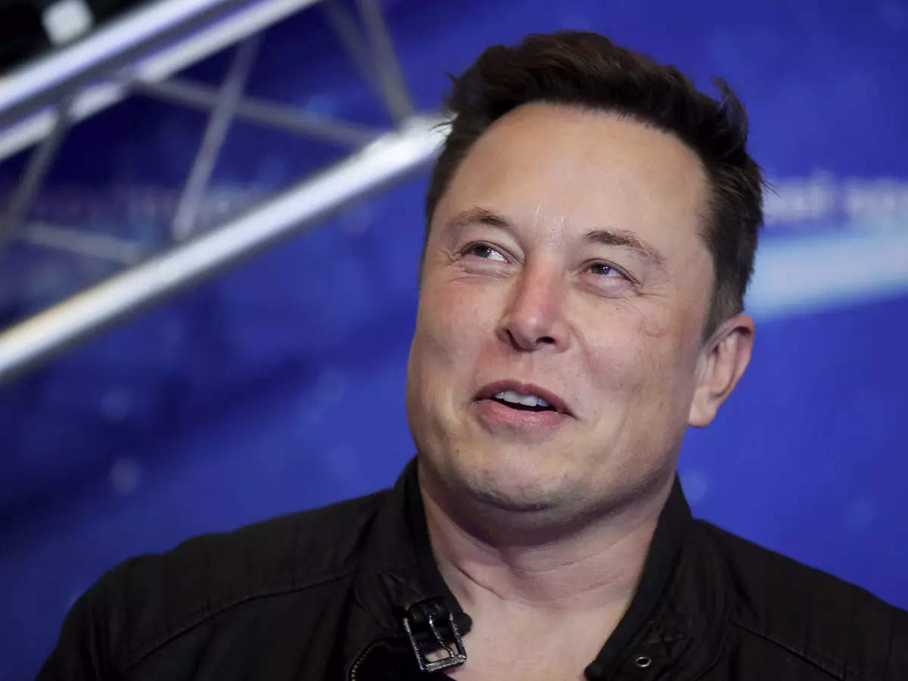

Elon Musk

"Learn as much as possible, Elon Musk advises young people"
Elon Musk Timeline of Accomplishments
- June, 1971 - Elon Musk was born in Pretoria, South Africa.
- 1989 - Elon Musk, age 17, had to move to Canada in order to attend Queen's University. He planned to go to the United States and it was easier coming from Canada.
- 1995 - Elon Musk started an internet city guide web software company Zip2 with his brother Kimbal.
- 1999 - Zip2 was sold to Compaq for $307 million USD.
- 2001 - Elon Musk started conceptualizing the Mars Oasis in an attempt to raise public interest in space exploration.
- 2002 - Elon Musk decided to build affordable rockets by starting a company.
- 2003 - Tesla had become incorporated.
- 2011 - Elon Musk announced plans to send humans to Mars in 10-20 years.
- 2018 - The Musk Foundation donated over $480,000 to help install water fountains with filtration systems at all Flint, Michigan schools.